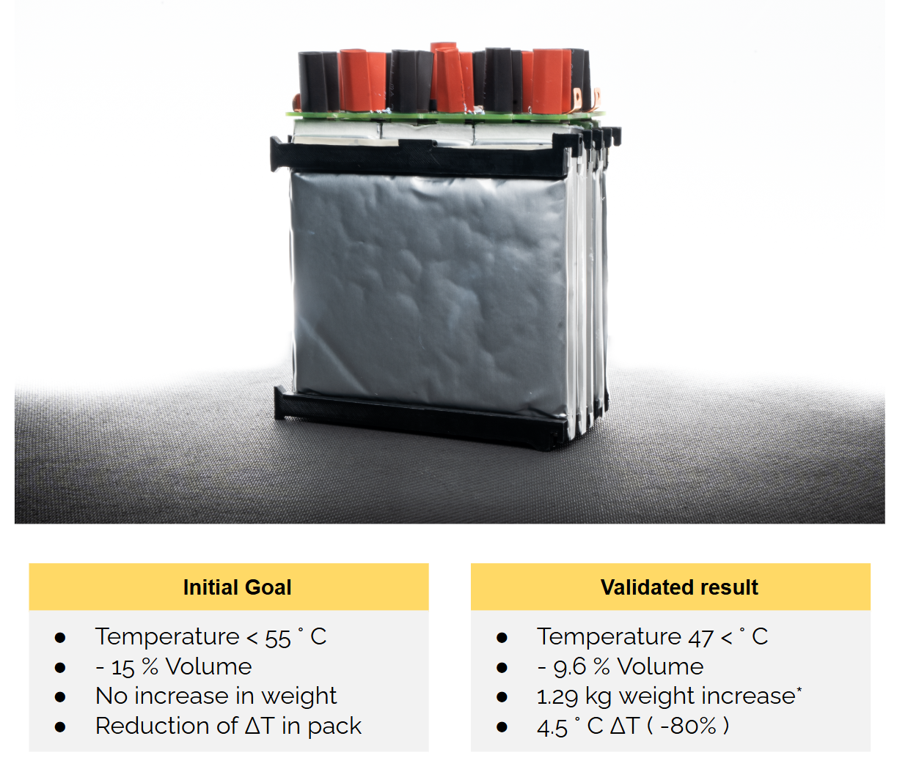

Lithium-Ion Battery Pack Thermal Management Using Phase Change Materials
NTNU, Norway, May 2023
Thesis investigating the use of phase change materials to improve thermal management in electric racecar battery packs.
Background
The Formula Student competiton, consisting of a narrow, 22 km race track, filled with short accelerations, and hard regenerative braking, poses significant thermal management challenges for the battery pack. Efficiently cooling a battery discharging at 15C and charging at 10C dozens times per minute, in all types weather had proved challenging with air cooling. Figure 1 shows the large temperature distribution inside the battery with the prior air cooling.

Solution
The proposed solution involves integrating phase change materials (PCMs) into the battery pack design. PCMs can absorb and release thermal energy during the charging and discharging cycles, helping to maintain a more stable temperature.
Thesis investigating the use of phase change materials to improve thermal management in electric racecar battery packs. Link to Thesis Report.